Clase 8: Ley de Hess y Ecuación de Kirchhoff
Dos consecuencias de que $H$ sea función de estado: la ley de Hess, que permite armar reacciones imposibles de medir sumando otras que sí lo son, y la ecuación de Kirchhoff, que traslada un calor de reacción a otra temperatura.
Temas que cubre
- Ley de Hess: el cambio de entalpía es el mismo en un paso o en varios
- Ejemplo canónico: $\mathrm{C(grafito)} \to \mathrm{CO} \to \mathrm{CO_2}$ frente a la combustión directa
- Reglas de manipulación: invertir una reacción, multiplicarla por un factor, sumarlas
- Aplicación: obtener $\Delta H$ de reacciones que no se pueden medir directamente
- El problema de la dependencia del calor de reacción con la temperatura
- Construcción del ciclo termodinámico $T_1 \to T_2$ para reactivos y productos
- Definición de $\Delta C_P^\circ$ como productos menos reactivos
- Ecuación de Kirchhoff en forma integral y en forma simplificada
Conceptos clave
Ley de Hess
Cuando los reactivos se convierten en productos, el cambio de entalpía es el mismo si la reacción ocurre en un paso o en una serie de pasos. No es una ley nueva: es exactamente lo que significa que $H$ sea función de estado.
Para qué sirve
$\mathrm{C} + \tfrac12\mathrm{O_2} \to \mathrm{CO}$ es imposible de medir limpiamente — siempre se forma algo de $\mathrm{CO_2}$. Pero las combustiones completas de C y de CO sí se miden, y restándolas se obtiene el dato buscado.
Álgebra de reacciones
Invertir una reacción cambia el signo de $\Delta H$. Multiplicarla por $n$ multiplica $\Delta H$ por $n$. Sumar dos reacciones suma sus $\Delta H$. Con estas tres reglas se arma cualquier reacción objetivo a partir de datos tabulados.
El ciclo de Kirchhoff
Para pasar de $\Delta H_1$ (a $T_1$) a $\Delta H_2$ (a $T_2$) se construye un camino alternativo: enfriar los reactivos de $T_2$ a $T_1$, reaccionar a $T_1$, y calentar los productos de $T_1$ a $T_2$. Como $H$ es función de estado, ambos caminos dan lo mismo.
$\Delta C_P^\circ$
La diferencia entre la capacidad calorífica total de los productos y la de los reactivos, cada una ponderada por su coeficiente estequiométrico. Puede ser positiva o negativa, y su signo dice si el calor de reacción crece o decrece con $T$.
Qué se necesita para aplicarla
Basta conocer $\Delta H^\circ$ a una temperatura (normalmente 298 K, de tabla) y las $C_P$ de todas las sustancias involucradas. Si el rango de $T$ es estrecho, se toma $\Delta C_P$ constante y la integral se vuelve un producto.
Fórmulas fundamentales




Qué hay que entender
- Hess y Kirchhoff son la misma idea aplicada dos veces: $H$ es función de estado, así que se puede reemplazar un camino imposible de medir por otro que sí lo es. Hess cambia el camino químico; Kirchhoff, el camino térmico.
- Para resolver un problema de Hess: escribir la reacción objetivo, y luego ver qué combinación lineal de las reacciones dadas la reproduce. Invertir cambia el signo, multiplicar escala.
- La entalpía de formación es en el fondo una aplicación de Hess: se tabula un conjunto de reacciones de referencia y todo lo demás se arma sumándolas.
- Si $\Delta C_P > 0$ el calor de reacción se vuelve más positivo (menos exotérmico) al subir $T$; si $\Delta C_P < 0$, más exotérmico.
- Cuidado con las unidades en Kirchhoff: $\Delta H$ suele venir en kJ/mol y $C_P$ en J/(mol·K). Hay un factor 1000 esperando.
- $\Delta C_P$ se calcula con las $C_P$ de todas las especies, cada una multiplicada por su coeficiente estequiométrico — no basta con restar dos números de tabla.